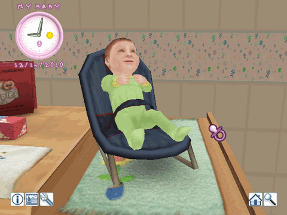
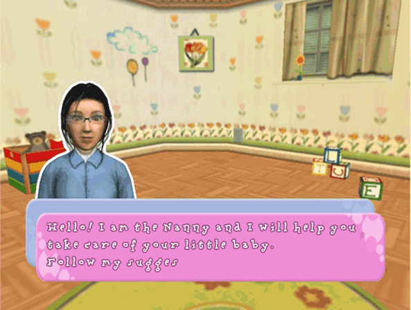

The following icons are on screen while you are interacting with your baby.

Information Icon
Press the A Button on this icon to view your baby's statistics. The Information Menu displays the level of each element that affects your baby. Press the A Button on the icon again to close the Menu.
Photo Icon
Press the A Button on this icon to take a picture of your baby. Use the on screen keyboard to name the photo and press the A Button on the "Thumbs Up" icon to save. If you are not happy with your photo press the B Button to return back to the previous screen.
Activities Icon
The Activities Menu contains the Food, Toys, Clothes and Wellness Menus. Depending on which room you are in will determine if there are objects available. Each room will also have different Mini Games for you to play. Also in this Menu is access to your photo albums, Main Menu and where to save your game. For more information please see the Activities Menu section.
House Icon
The house icon will take you first to the map of the house. Press the A Button on any room in the house to change your location. Select the 'To Town' icon in the bottom right of the screen to head into town for some shopping!
Zoom Icon
Selecting this icon will alternate the camera position between far away and close up.
The Nanny
The Nanny is a very important person in the game. She will make suggestions to you from time to time and will warn you of any mistakes you might be making. These tips will help become a good parent!
